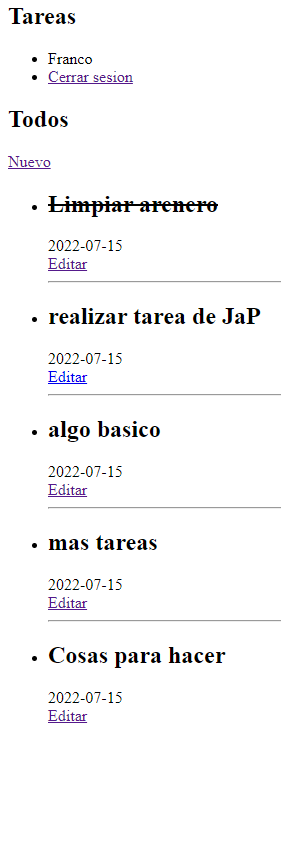
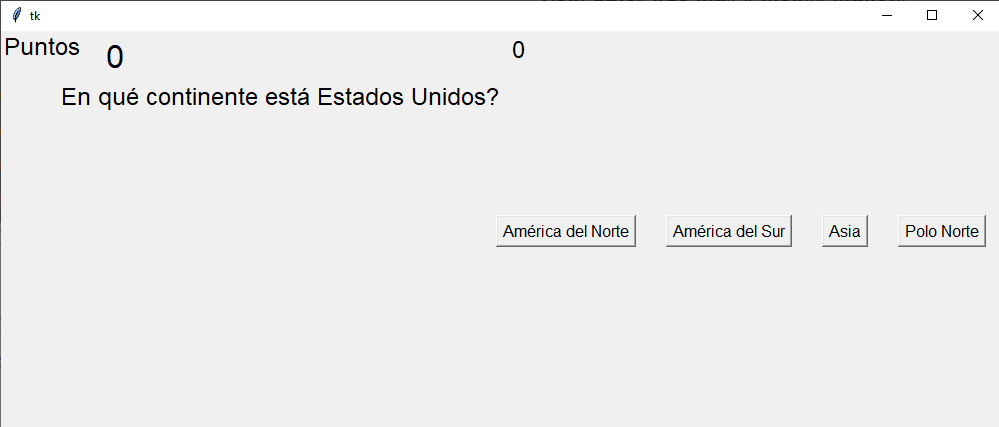

Franco Torres
Franco Torres
Programador
Lista de Tareas con Flask
Un pequeño gestor de tareas que fue diseñado con Python/Flask, algo de HTML y MySQL
Juego de preguntas y respuestas
Un juego de preguntas y respuestas, totalmente aleatorio creado con Python/Tkinter predominando en su diseño la programación orientada a objetos
Pagina Web
Una pequeña pagina web con un simple formualario de contacto
Broparadores